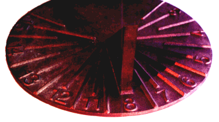
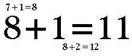
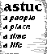

<table cellpadding="8" cellspacing="0" border="0">
<tr>
<td<HTML>
<HEAD>
<TITLE>startime sundial </TITLE>


</HEAD>

<BODY BACKGROUND="face.jpg" bgcolor="#D0CCD0" TEXT="#660000" LINK="#333399" VLINK="#333300" ALINK="#0F0000"> 

<A NAME="sundail1"></A><font size="4" face="Arial">
<STRONG><H1><CENTER>STARTIME SUNDIAL</CENTER></H1></STRONG>



<table cellpadding="8" cellspacing="0" border="0">
<tr>
<td bgcolor="#CACACA">
<P>This sundial was built to help legitimize the idea of Startime.  Startime is an alternative to civil time.  The Startime sundial was needed to provide an actual demonstration of the viability of Startime.
Sundials existed before the idea of civil time and the early sundials have had heavy influence on the structure of civil time. Our belief in the structure of time is dependent on the belief that there is a relationship between the present structures and the natural phenomenon of the day. Culturally this is maintained by the sundial.
<P>Startime is based on mean solar time. Each of the days four  parts; morning, day, evening and night  is divided into four "Stars". These units are subsequently divided into an equal number of  "Eggs". 
<P>	The time shown on this sundial is four and one half stars (4+8). This is approximately half way between midnight and noon in the morning.  The sundial shows eight stars at noon, fourteen stars in the evening and eighteen stars at midnight. A Base is used to count the stars. You can't understand Startime until you learn about A Base.
<P>The sundial is made of cast bronze.  It was built to be accurate in the latitude of the lower great lakes region on what is now known as the Thames River. The sundial displays apparent solar time. This varies throughout the year. At times it may be up to three eggs earlier or later than the mean solar time kept by a clock. A slight rotation adjusts the sundial to coincide with mean solar time. This adjustment is determined by the ana lemma, a graphical representation of relationship between mean and apparent time as a function of the earths location in its ellipse around the sun. 
</TD>
	</TR>
</TABLE><BR><BR><BR><BR>


<table border=0 width=85%>
<tr><td>

<UL>
<LI><A HREF="index.html"> A Green Dot</A>
<LI><A HREF="dotext.htm">Guestbook</A>
<LI><a href="astuc.htm">An ASTUC Manifesto</a>
<LI><A HREF="astuc.htm#aba">Back to Manifesto</A>
<LI><A HREF="http://www.ph-cip.uni-koeln.de/~roth/slinks.html">Sundial Links</A>
<LI><A HREF="http://www.sundials.co.uk/index.htm">Sundials on the Internet</A>
<LI><a HREF="abase.htm">Learn A Base</a>
</UL>
</td>
<td><CENTER><H3>Learn About A Base</H3></CENTER>
<a HREF="abase.htm">
</A></td>
</tr></table>

<BR><BR>
<BR><BR><TABLE width="100%">
	<TR>
		<TD>
<A HREF="astuc.htm">
</a></TD>
		<TD><A HREF="abc.htm">
</A></TD>
		<TD><A HREF="sundial1.htm">
</A></TD>
		<TD><A HREF="daylight.htm">
</A></TD>
		<TD><A HREF="currency.htm"></A></TD>
		<TD><A HREF="degrees.htm">
</A></TD>
	</TR>
</TABLE><BR><BR>


<CENTER>
<TABLE>
	<TR>
		<TD><A HREF="index.html"></A></TD>
				<TD><A HREF="astuc.htm"></A></TD>
		<TD><A HREF="abase.htm"></A></TD>
		<TD><A HREF="abc.htm"></A></TD>
		<TD><A HREF="sundial1.htm"></A></TD><TD><A HREF="currency.htm"></A></td>
		
		<TR>
		<TD><A HREF="daylight.htm"></A></TD>
		<TD><A HREF="calendar.htm"></A></TD>
		<TD><A HREF="abasefra.htm"></A></TD>
		<TD><A HREF="degrees.htm"></A></TD>
		<TD><A HREF="linkpage.htm"></A></TD><TD><A HREF="squiggy.htm"></A></td>
	</TR>
</TABLE></CENTER>


<BR><BR><BR><BR><BR><BR><BR>

<FONT SIZE="-1" COLOR="#660000">
<CENTER>This page was last updated on AH 82 Seuautum 25 at 14 Stars 11 Eggs

<BR>
</FONT></font>
</CENTER>
</FONT>
<script type="text/javascript">
var gaJsHost = (("https:" == document.location.protocol) ? "https://ssl." : "http://www.");
document.write(unescape("%3Cscript src='" + gaJsHost + "google-analytics.com/ga.js' type='text/javascript'%3E%3C/script%3E"));
</script>
<script type="text/javascript">
try {
var pageTracker = _gat._getTracker("UA-11166840-1");
pageTracker._trackPageview();
} catch(err) {}</script><script type="text/javascript">
var gaJsHost = (("https:" == document.location.protocol) ? "https://ssl." : "http://www.");
document.write(unescape("%3Cscript src='" + gaJsHost + "google-analytics.com/ga.js' type='text/javascript'%3E%3C/script%3E"));
</script>
<script type="text/javascript">
try {
var pageTracker = _gat._getTracker("UA-11166840-1");
pageTracker._trackPageview();
} catch(err) {}</script></BODY>
</HTML>